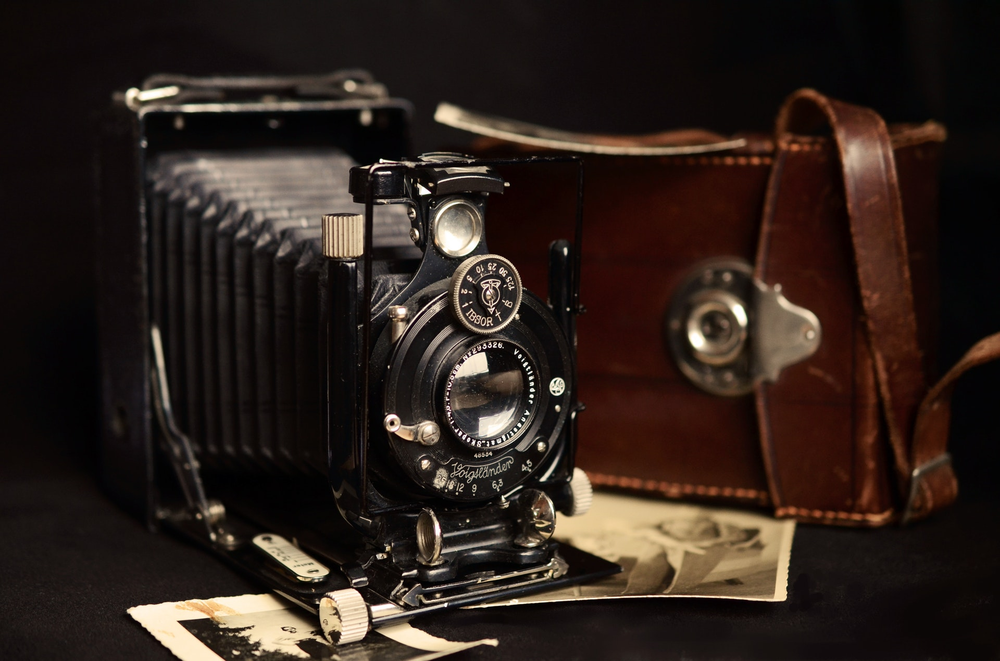

Что такое фотография
Фотогра́фия — технология записи изображения путём регистрации оптических излучений с помощью фотоматериала или полупроводникового преобразователя. В отличие от некоторых других языков, в русском слово «фотография» используется только применительно к неподвижным изображениям. В то же время, в профессиональном кинематографе этот термин обозначает изобразительное решение фильма, создаваемое кинооператором. Фотографиями также называются конечные отпечатки фотографического изображения, изготовленные на фотобумаге химическим способом или на обычной бумаге цифровым принтером.
История фотографии
Первое устойчивое фотографическое изображение было создано в 1822 году французом Жозефом Нисефором Ньепсом, но оно не сохранилось до наших дней. Датой изобретения технологии по решению IX Международного конгресса научной и прикладной фотографии считается 7 января 1839 года, когда Франсуа Араго сделал доклад о дагеротипии на заседании Французской академии наук.
Создание фотографии
Человек, осуществляющий фотосъёмку называется фотографом. В большинстве случаев он же выполняет все остальные стадии создания фотоизображения, однако часто техническая часть работы выполняется фотолаборантами, ретушёрами, фоторедакторами и представителями других профессий. В профессиональной студийной фотографии некоторые обязанности фотограф перепоручает своим ассистентам.
